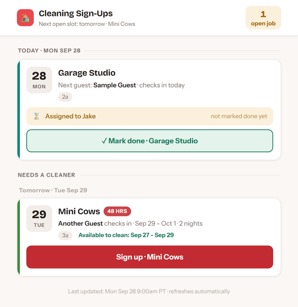
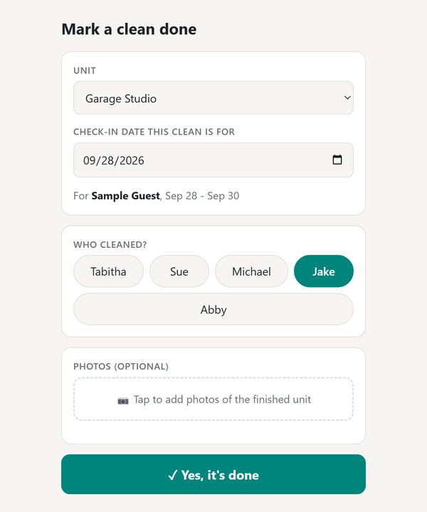
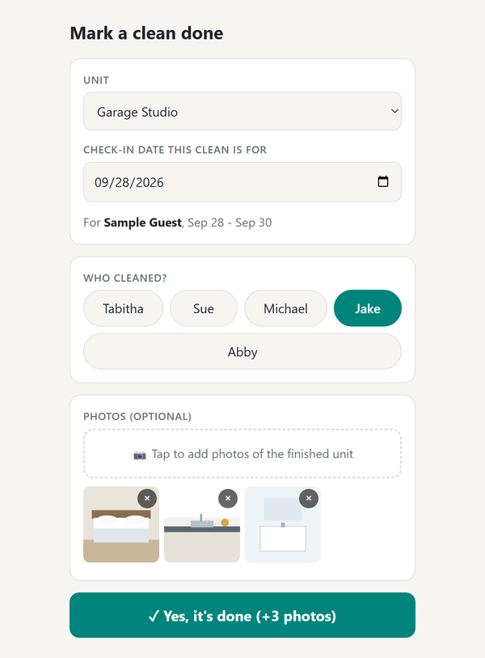
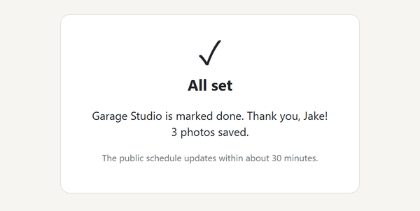

How to mark a clean done
About 30 seconds. Photos are optional. (Pictures below use a sample guest.)
1Tap "Mark done" on the site
Open the cleaning site and find the card for the unit you cleaned. Tap the green Mark done button. It shows up once the previous guest has checked out.

2Check the details
The page opens with the unit, date and your name already filled in. Check that the guest name matches the stay you cleaned for.

3Add photos (optional)
Tap the dashed box to take pictures or pick them from your camera roll. Up to 12. Tap the x on one to remove it. If your name isn't highlighted, tap it.

4Tap "Yes, it's done"
Wait for All set. That's it. The site shows the unit as done within about 30 minutes.

Good to know
- Nothing is saved until you tap Yes, it's done. Opening the link by accident is fine.
- Google shows a small banner saying the page was made by an Apps Script user. That's normal; it's our page.
- Forgot photos? Open the same link again and add them. It won't mark the clean twice.
- Replying DONE to the text still works too.